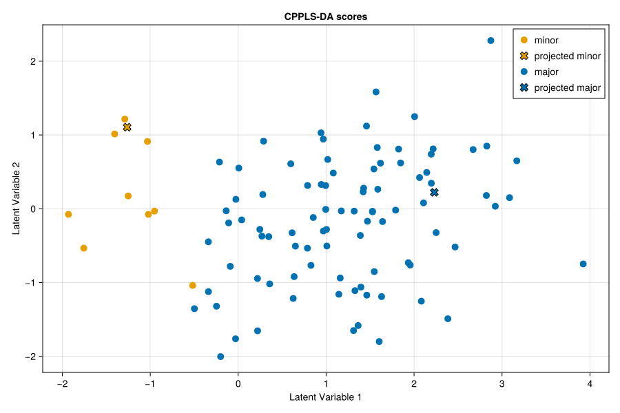

Projection and Prediction
After fitting a CPPLS model with fit, you can apply it in two main ways:
- Use
projectto map new samples into the latent score space defined by the model. - Use
predictto generate predicted responses from new predictor values.
For discriminant models, CPPLS provides helper functions to convert raw prediction arrays into class assignments. onehot and sampleclasses perform these conversions when you already have the output of predict. For convenience, onehot and sampleclasses take predictor data, call predict internally, and return one-hot encoded class predictions and predicted class labels directly, respectively.
Example
The example below reuses the synthetic discriminant-analysis dataset introduced on the Fit page. We hold out one sample from each class, fit a CPPLS-DA model on the remaining observations, and then use the fitted model to:
- project the held-out samples into the latent space, and
- predict their class membership.
We start by loading the synthetic data and splitting them into a training set and a hold-out set.
The packages loaded below serve different purposes: CPPLS provides the modeling, projection, and prediction functions, while JLD2 reads the example dataset from disk. In a normal Julia environment, both packages must be installed before running the example; the Julia Pkg documentation explains how to install registered packages in the Getting Started section.
using CPPLS
using JLD2
using CategoricalArrays
using CairoMakie
# Get custom colors
orange, blue = Makie.wong_colors()[2], Makie.wong_colors()[1]
samplelabels, X, classes, Yadd = load(
CPPLS.dataset("synthetic_cppls_da_dataset.jld2"),
"sample_labels",
"X",
"classes",
"Y_add"
)
classes = categorical(classes)
holdout_idx = [findlast(==("minor"), classes), findlast(==("major"), classes)]
train_idx = setdiff(collect(axes(X, 1)), holdout_idx)
X_train = X[train_idx, :]
classes_train = classes[train_idx]
Yadd_train = Yadd[train_idx, :]
labels_train = samplelabels[train_idx]
X_holdout = X[holdout_idx, :]
classes_holdout = classes[holdout_idx]
labels_holdout = samplelabels[holdout_idx]
plot_classes_holdout = ["projected $class" for class in classes_holdout]We next fit a discriminant model with two latent components and allow gamma to be selected during fitting.
m = CPPLSModel(
ncomponents=2,
gamma=intervalize(0:0.25:1),
center_X=true,
scale_X=true,
analysis_mode=:discriminant
)
mf = fit(
m,
X_train,
classes_train;
obs_weights=invfreqweights(classes_train),
Yadd=Yadd_train,
samplelabels=labels_train
)We can now apply the fitted model to the held-out samples. We first use project to obtain latent scores and then plot the held-out samples together with the training samples in the fitted score space. The returned heldout_scores matrix has one row per held-out sample and one column per latent component.
heldout_scores = project(mf, X_holdout)
projected_plt = scoreplot(
vcat(labels_train, labels_holdout),
vcat(classes_train, plot_classes_holdout),
vcat(xscores(mf), heldout_scores);
backend=:makie,
figure_kwargs=(; size=(900, 600)),
title="CPPLS-DA scores",
group_order=["minor", "projected minor", "major", "projected major"],
group_marker=Dict(
"minor" => (; color=orange),
"projected minor" => (; color=orange, marker=:x, markersize=16, strokecolor=:black, strokewidth=1),
"major" => (; color=blue),
"projected major" => (; color=blue, marker=:x, markersize=16, strokecolor=:black, strokewidth=1)
),
default_marker=(; markersize=14)
)
save("projected.svg", projected_plt)
The two projected samples fall near the clusters of the classes from which they were held out. That visual impression suggests that the model should classify them as minor and major, respectively, but prediction lets us check that conclusion more directly.
The true class labels of the held-out samples are:
classes_holdout2-element CategoricalArray{String,1,UInt32}:
"minor"
"major"Let us now see what the model predicts:
heldout_predictions = predict(mf, X_holdout)
sampleclasses(mf, heldout_predictions)2-element CategoricalArray{String,1,UInt32}:
"minor"
"major"As we can see, the predicted labels match the classes from which the samples were drawn. In this example, heldout_predictions is a three-dimensional array whose third dimension indexes the number of components used in the prediction.
Instead of calling predict and sampleclasses successively, we could have used the convenience wrapper sampleclasses.
More generally, the convenience methods onehot and sampleclasses take predictor data and internally call predict, returning class assignments directly. This is often more convenient in discriminant-analysis workflows than working with the full prediction tensor.
sampleclasses(mf, X_holdout)2-element CategoricalArray{String,1,UInt32}:
"minor"
"major"API
CPPLS.onehot — Method
onehot(
mf::AbstractCPPLSFit,
predictions::AbstractArray{<:Real, 3}
) -> Matrix{Int}Convert a 3D prediction tensor (as returned by predict) into a one-hot encoded matrix. Predictions are summed across components before selecting the highest-scoring class for each sample.
See also AbstractCPPLSFit, CPPLSFit, predict, onehot, sampleclasses
Examples
julia> using CPPLS; using CategoricalArrays; using JLD2; using Random;
julia> X, classes = load(CPPLS.dataset("synthetic_cppls_da_dataset.jld2"), "X", "classes");
julia> classes = CategoricalArray(classes);
julia> m = CPPLSModel(ncomponents=2, gamma=0.5, analysis_mode=:discriminant);
julia> mf = fit(m, X, classes);
julia> Xnew = randn(MersenneTwister(1234), 2, size(X, 2));
julia> raw = predict(mf, Xnew);
julia> onehot(mf, raw) ≈ [1 0; 0 1]
trueCPPLS.onehot — Method
onehot(
m::AbstractCPPLSFit,
X::AbstractMatrix{<:Real},
ncomponents::Integer=size(coefall(m), 3)
) -> Matrix{Int}Generate one-hot encoded class predictions from a fitted CPPLS model and predictors X. This calls predict, sums predictions across components, and assigns each sample to the highest-scoring class.
See also AbstractCPPLSFit, CPPLSFit, predict, onehot, sampleclasses
Examples
julia> using CPPLS; using CategoricalArrays; using JLD2; using Random;
julia> X, classes = load(CPPLS.dataset("synthetic_cppls_da_dataset.jld2"), "X", "classes");
julia> classes = CategoricalArray(classes);
julia> m = CPPLSModel(ncomponents=2, gamma=0.5, analysis_mode=:discriminant);
julia> mf = fit(m, X, classes);
julia> Xnew = randn(MersenneTwister(1234), 2, size(X, 2));
julia> onehot(mf, Xnew) == [1 0; 0 1]
trueStatsAPI.predict — Function
predict(
mf::AbstractCPPLSFit,
X::AbstractMatrix{<:Real},
ncomponents::Integer=size(coefall(mf), 3)
) -> Array{Float64, 3}Predict the response Y for each sample in X using the fitted model. Here, ncomponents is the number of latent CPPLS components used to form the prediction. The result is a 3-dimensional array of size (n_samples, n_targets, ncomponents): the first dimension indexes samples, the second indexes response variables, and the third indexes the number of components used. In particular, [:, :, i] contains the prediction matrix obtained using the first i components. A DimensionMismatch is thrown if ncomponents exceeds the number of components stored in the model.
See also AbstractCPPLSFit, CPPLSFit, onehot, onehot, sampleclasses
Examples
julia> using CPPLS; using CategoricalArrays; using JLD2; using Random;
julia> X, classes = load(CPPLS.dataset("synthetic_cppls_da_dataset.jld2"), "X", "classes");
julia> classes = CategoricalArray(classes);
julia> m = CPPLSModel(ncomponents=2, gamma=0.5, analysis_mode=:discriminant);
julia> mf = fit(m, X, classes);
julia> Xnew = randn(MersenneTwister(1234), 2, size(X, 2));
julia> Ynew = predict(mf, Xnew);
julia> size(Ynew)
(2, 2, 2)CPPLS.project — Function
project(mf::CPPLSFit, X::AbstractMatrix{<:Real}) -> AbstractMatrixCompute latent component X scores by projecting new predictors X with a CPPLSFit model. The predictors are centered and then multiplied by projectionmatrix(@ref CPPLS.projectionmatrix), returning an (n_samples, ncomponents) X score matrix.
See also CPPLSFit, projectionmatrix
Examples
julia> using CPPLS; using CategoricalArrays; using JLD2; using Random;
julia> X, classes = load(CPPLS.dataset("synthetic_cppls_da_dataset.jld2"), "X", "classes");
julia> classes = CategoricalArray(classes);
julia> m = CPPLSModel(ncomponents=2, gamma=0.5, analysis_mode=:discriminant);
julia> mf = fit(m, X, classes);
julia> Xnew = randn(MersenneTwister(1234), 2, size(X, 2));
julia> xscores = project(mf, Xnew);
julia> size(xscores)
(2, 2)CPPLS.sampleclasses — Method
sampleclasses(
mf::CPPLSFit,
predictions::AbstractArray{<:Real, 3}
) -> AbstractVectorConvert a 3D prediction tensor (as returned by predict) into class labels using the stored responselabels ordering.
See also CPPLSFit, analysis_mode sampleclasses predict, onehot, onehot, sampleclasses responselabels
Examples
julia> using CPPLS; using CategoricalArrays; using JLD2; using Random;
julia> X, classes = load(CPPLS.dataset("synthetic_cppls_da_dataset.jld2"), "X", "classes");
julia> classes = CategoricalArray(classes);
julia> m = CPPLSModel(ncomponents=2, gamma=0.5, analysis_mode=:discriminant);
julia> mf = fit(m, X, classes);
julia> Xnew = randn(MersenneTwister(1234), 2, size(X, 2));
julia> raw = predict(mf, Xnew);
julia> sampleclasses(mf, raw) == ["major", "minor"]
trueCPPLS.sampleclasses — Method
sampleclasses(
mf::CPPLSFit,
X::AbstractMatrix{<:Real},
ncomponents::Integer=size(coefall(mf), 3)
) -> AbstractVectorGenerate predicted class labels from a discriminant CPPLS model and predictors X. The returned vector follows the ordering in responselabels.
See also CPPLSFit, predict, onehot, coefall,
Examples
julia> using CPPLS; using CategoricalArrays; using JLD2; using Random;
julia> X, classes = load(CPPLS.dataset("synthetic_cppls_da_dataset.jld2"), "X", "classes");
julia> classes = CategoricalArray(classes);
julia> m = CPPLSModel(ncomponents=2, gamma=0.5, analysis_mode=:discriminant);
julia> mf = fit(m, X, classes);
julia> Xnew = randn(MersenneTwister(1234), 2, size(X, 2));
julia> sampleclasses(mf, Xnew) == ["major", "minor"]
true